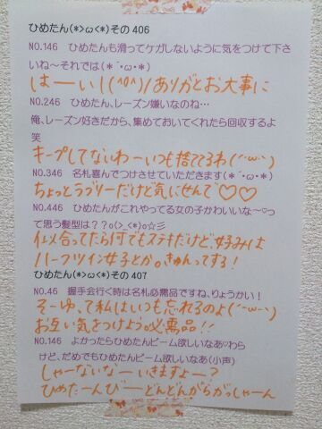

| 2014/06 20 Fri | ひめたん-OoO-その453 |
9thシングルの特典映像は個人PV。
youtubeの公式チャンネルに
予告編がアップされました！
ひめたんのはType-Cに収録されてます♪
今回のテーマは しりとり！
歌もちょっとだけ歌いました♪
お楽しみにっ
SHIRITORI HOUSE
中元日芽香×月田茂・山本篤彦・柴谷麻衣
次回の乃木ののは
みおちゃん (堀未央奈ちゃん)
さゆりんご (松村沙友理ちゃん)です☆
文化放送はお休みなので
ラジオ福島、青森放送、山梨放送のみ
お届けします( ´ ▽ ` )ノ
放送圏にお住まいの方は
よろしくお願いします♪
火曜、水曜は撮影をしてきたよ！
火曜日は乃木どこ♪
水曜日は......まだ内緒♪
お楽しみにヽ(・∀・)ノ
そういや明日の沈黙の金曜日で
9thアンダー楽曲解禁！


 ひめたんは焼肉のタレは甘口、中辛、辛口、
ひめたんは焼肉のタレは甘口、中辛、辛口、
どれが好きですか？
これは甘口派！
ライブ慣れしてない初心者は
どんな用意で参加したらいいですかね？
推しメンタオルとか推しメンTシャツとか
推しメンうちわとかおすすめ( ^O^ )
はじめて参加するよーって方なら
とりあえずサイリウムとか持つだけでも
楽しいと思う♪
ちなみにひめたんはピンクのサイリウムが好き！
逆にこんな難しい漢字
書けるんだよーってのはあるの？
「とりりーぬさん」とか。
「鳥氏」←これじゃない？
不二家でまなったんが
「たんひめ、ケーキどれにする」って
ペコちゃんに話しかけてたらどうする？
おともだちだって思われたら恥ずかしいから
他人のフリする、かな(〃ω〃)
ひめたんは家族からは何て呼ばれてるの？
ひめ、ひめたん、ひめすけ。
ひめたんはこの漢字読める？
『蛸』
別にぼけなくていいよ、ぼけなくていいから。
なにこれフリ？
私は空気は読まないよ＼(^o^)／たこ！
ひめたーん！！！
文化祭で写真撮るとき、
ひめたんビーム使っていい？
良かったらひめたんビームで返してー
(<・ω・>)
国語・数学・理科・社会・英語
の中でひめたんが好きな教科って何ー？？
国語！
ひめたんの日記の
コメント欄下２ケタに46を踏んだ方へ
手書きでコメ返するコーナー
＼ ひめたん46 ／

いつもコメントたくさん
ありがとうございます
プリンシパル終わって一息......と思いきや
なんだかんだでバタバタの毎日
うん、なんか乃木充してるぞ(＊´ω`＊)
これからはライブづくしじゃ！
日芽香
コメント(461)
2014/06/20 00:00